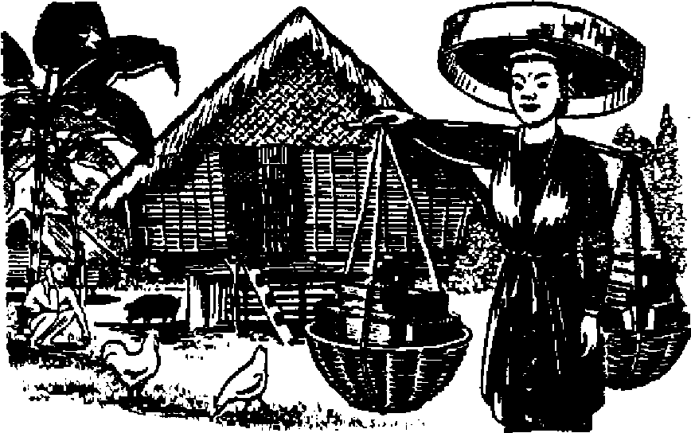

Whither Britain, Under Labor Government? A Britisher surveys the progress made to date
Few recognize the sinister force opposing Indo-China
This winged warrior possesses many redeeming qualities
The tons of floating filth menacing health can be eliminated
News sources that are able to keep you awake to the vital issues of our times must be unfettered by censorship and selfish interests. “Awake!” has no fetters. It recognizes facts, faces facts, is free to publish facts. It is not bound by political ambitions or obligations; it is unhampered by advertisers whose toes must not be trodden on; it is unprejudiced by traditional creeds. This journal keeps itself free that it may speak freely to you. But it does not abuse its freedom. It maintains integrity to truth.
“Awake!” uses the regular news channels, but is not dependent on them. Its own correspondents are on all continents, in scores of nations. From the four corners of the earth their uncensored, on-the - scenes reports come to you through these columns. This journal’s viewpoint is not narrow, but is international. It is read in many nations, in many languages, by persons of all ages. Through its pages many felds of knowledge pass in review—government, commerce, religion, history, geography, science, social conditions, natural wonders—why, its coverage is as broad as the earth and as high as the heavens.
“Awake I” pledges itself to righteous principles, to exposing hidden foes and subtle dangers, to championing freedom for all, to comforting mourners and strengthening those disheartened by the failures of a delinquent world, reflecting sure hope for the establishment of a righteous New World.
Get acquainted with “Awake!” Keep awake by reading “Awake!”
Published Semimonthly By WATCHTOWER BIBLE AND TRACT SOCIETY, INC.
117 Adams Street Brooklyn 1, N. Y., U. S. A.
N. H. Knorr, President Grant Suiter, Secretary
Five cents a copy One dollar a year
Remittances should be sent to office in your country in compliance with regulations to guarantee safe delivery of money. Remittances are accepted at Brooklyn from countries where no office is located, by international money order only. Subscription rates in different countries ate here stated in local currency.
Notice of expiration (with renewal blank) is sent at least two issues before subscription expires.
Change of address when sent to our office may bo expected effective within one month. Send your old as well as new address.
Offices Yearly Subscription Rate
America, U.S., 117 Adams St., Brooklyn 1, N.Y.
Australia, 7 Beresford Rd., Strathfield. X.S.W. 6s Canada. 40 Irwin Are., Toronto 5, Ontario $1 England, 34 Craven Terrace, London, W. 2 5s South Africa, 623 Boston House, Cape Town 5s
Entered as second-class matter at Brooklyn, N. Y., Act of March 3, 1879. Printed in U. S. A.
CONTENTS
Whither Britain, Under Labor Government? 3
Fascist Arms in Catholic Church
Man—Earth’s Caretaker or Destroyer?
Undoing Civilization’s Destructiveness
‘Music’ Lures Fish into the Frying Pan
Not That, Please! 15
Your Pugnacious Friend the Wasp
Cicada-Killers and Tarantula Hawks
Abasing a Self-exalting Clergyman
Sobering Up the Super-Patriots
“Thy Word Is Truth”
Volume XXVIII Brooklyn, N.Y., March 8, 1947 Numbers
ANY radical change in the government of a country is usually regarded by the nation itself as somewhat of an experiment in political economy. To other nations it appears in an even more uncertain light. Small wonder, then, that the advent to power in Britain of a Labor or Socialist government both inspired hopes of and raised doubts as to the wisdom and success of its announced olicy. Abroad, particularly in that citael of free enterprise, the United States, there arose feelings of anxiety, not to say consternation, at the prospect of Britain’s becoming communistically inclined. Ill-founded speculation and fears of a much closer association with Soviet Russia added poison to the already highly critical minds of American vested interests, and a healthy, sober, impartial view of the actual position seemed to be quite at a discount. Unfortunately, this erroneous impression of Britain’s tendencies, like all suggestions of that lying jade, Miss Rumor, gained widespread currency and still persists to a degree that is surprising to those who know the facts.
It is now about eighteen months since the Labor party were elected by the voting of the British people as the government of the day. During that comparatively short period they have passed into law, following democratic debate in Parliament, a record number of bills, the majority of which in any normal year would have constituted legislative measures of unusual importance. The government has inaugurated a comprehensive system of social security, created a national health service, laid the foundation for a housing program, nationalized the Bank of England, civil aviation, cables, coal mines, and is now about to nationalize transport and then to deal with land and the gas and electricity undertakings. Nearly all the measures passed or introduced have, of course, been subject to considerable criticism by the Parliamentary opposition (almost entirely the Conservative party) and also bv the vested interests affected in each
*■ B
particular instance, and in some cases a good deal of impassioned heat has added to the force and animation of the discussions. That section of the press, and it is the largest in the country, which has always been conservative in outlook naturally is in strong support of the opposition, and has done everything it can to discredit the intentions of the government.
Production and Exports
However, the government has gone ahead with its program, and it must be frankly acknowledged now, in the light of the limited experience thus far, that the fears of the country’s ruination, which were at one time strongly held outside Labor circles, have weakened somewhat, while moderate views now prevail among many people and newspapers of independent thought. Today,
in spite of food rationing, there are fewer mouths left really hungry among the poorer sections of the population than heretofore. Prior to the recent acute fuel crisis important British industries were working at a greater capacity than ever. The steel output was running at record figures; the production of motorcars and commercial vehicles, according to statistics just released by the Society of Motor Manufacturers and Traders, was such as to make the export of the former twice, and of the latter nearly five times, the volume represented by the 1938 average shipments. Such valuable export groups as machinery, iron and steel, chemicals, electrical goods, cutlery and hardware were far ahead in value of any peacetime consignments.
The success of Britain's export drive has, of course, been the government's main objective, for if it fails the national economy will indeed be ruined. To this end everything has been done to encourage the nation's export industries in the supply of manpower and raw materials, so far as the latter have been available; and the measure of the government’s achievement is indicated by the fact that for the complete year 1946 domestic exports should total about £900,000,000, which is £200,000,000 above the target officially set. As a matter of further interest in showing Britain’s commercial recovery, it should be stated that whereas in 1923, the fourth year after World War I, according to Mr Marquand, secretary for overseas trade, the volume of the nation’s exports was only 77 percent of the then prewar total; for 1946 they were double the volume of 1938, the last complete year before World War IL
Some industries, cotton textiles for example, have been under heavy weather, but there is hope that the recommendations of the Working Parties formed to investigate and report on what is necessary for their healthy reorganization or revival will produce good results.
It is now disclosed by the London Evening Standard of January 7 that Sir Stafford Cripps, president of the Board of Trade, has submitted to Prime Minister Attlee for cabinet consideration a complete scheme for the second phase of nationalization, embracing about sixteen industries, including those for which Working Parties were appointed. Even that powerful employers' organization, the Federation of British Industries, does not object to this scheme for certain trades, although it is understood that it will oppose its application to the engineering industry because of its ramifications.
Home Supplies, Housing and Coal
The resuscitation of exports has been at the expense of supplies of goods to the home market, but even here there has been an improvement during the last half of 1946. On the whole, however, the transition from wartime to peacetime conditions has seemed slow to the general community, for much austerity continues and the lifting of rationing of bread and other commodities does not yet seem likely. There are other difficulties, such as the coal shortage and the vexatious frequency of unofficial strikes, which entail hardships for the community out of which those opposed to government policy are keen to make political capital and argue that the national economy as now run is largely responsible. To the unprejudiced, however, it is recognized that in any case the government inherited problems of unprecedented magnitude consequent on the war and the general view has been "Give them a chance".
Housing and coal are the two outstanding fields where the government at present seems unable to meet the national need. The material for building and a full complement of labor are not yet available for large-scale housing, hut the government has a heavy building program and it is now beginning to get un-
der way. The coal-mining situation has in a double sense been a black spot on the nation’s industry. Both the minister of mines and trade union leaders have exhorted the miners to increase output, but the fuel crisis continues. February saw it assuming ominous proportions. With demands increased by a cold wave and bhzzards, absenteeism among the miners decreased production. On February 7 the fuel minister announced electricity to industrial users would be cut off for several days. It was rationed out to homes. Wartime street blackouts returned. Gas supplies ran low. England was grave, but talk of a coalition government was brushed aside by the Labor government. Severe criticisms that the government was more concerned about doctrinaire nationalization schemes than about supplying factories with coal were rampant. The Labor government was very definitely thrown on the defensive. But the latter part of the month saw slow gains in overcoming the crisis.
It must not be overlooked that the nationalization of various British industries or undertakings means their purchase as well as their operation by the state. The owners or shareholders are thus compensated, although in some cases the arrangement differs. For instance, in taking over the Bank of England the government gave the proprietors of the stock the equivalent of the same income as received for a long time previously, but in regard to the railways, Mr. Barnes, minister of transport, has announced that the purchase consideration is to be based on current market values. Again, in their Town and Country Planning Bill, the terms of which have just been published and which is the government’s alternative to land nationalization, the government is buying out within five years existing development values at its own figure of £300,000,000, which is less by £100,000,000 than the amount mentioned in the Barlow Report of seven years ago. In this bill, the government expresses the view that loss of development value should carry compensation, not of right, but ex gratia, by way of averting hardship. However, those proposals of the bill which aim at improving the machinery for planning the use of land are regarded by such a vigorous critic of government policy as the London Daily Telegraph (January 8) as “likely to carry a fair measure of assent”, although its views on the compensation clauses are rather different.
Religion and Nationalization
The attitude of religionists to the government’s program is somewhat mixed. The more liberal-minded Methodists are inclined to welcome it in some measure, mainly because it aims at improving the social and economic conditions of the people, but the left-wing supporters of the government are apt to cause them some uncertainty, if not unscttlemcnt, as these leftists have little place for orthodox religion in their scheme of things. The Church of England has been concerned about nationalization and has feared any extreme measures, but apart from complaint that with the nationalization of the railways and coal mines there will henceforward be a lower financial return for clergy and others 'who had money invested, they do not have much to say. They probably think more. On January 8, hovrever, the bishop of Carlisle became sufficiently bold to express' his fears about a state press. Said he, "Whatever else may be nationalized, I sincerely hope there will be no nationalization of the press.”
The prospect of the spoiling of some of their financial pastures did axcite the church groups to protest nationalization of railroads. The following appeared in the New York Times, January 27, 19'47:
All British Churches Protest Rail Scheme
London, Jan. 26—A protest by all church denominations in Britain over the monetary
loss that faces them as result of the Government's plans to nationalize the railroads was conveyed to Hugh Dalton, Chancellor of the Exchequer, on Friday, it was announced today.
Mr. Dalton, accompanied by W. G. Hall, financial secretary to the Treasury, received a deputation from the churches and religious communities led by Dr. Geoffrey Fisher, Archbishop of Canterbury, The Churches of England and Scotland and the Church in Wales, the free churches, the Roman Catholic Church and the Jewish community were all represented by authorized spokesmen.
“A full and frank discussion took place/* a Government communique said, “and the Chancellor undertook that careful consideration would be given by the Government to the facts submitted to him and to the views which had been expressed?*
The nationalization scheme provides for the Government’s taking over railway shares at prices prevailing during specified periods of 1946, In exchange, holders will receive government bonds yielding a lower income. The churches hold large investments in railways.
As was stated earlier, the government has by no means fulfilled the worst of fears. If they are able to carry out their program for the complete five-year period of office, we shall have advanced only to a semi-socialist state; and be it noted that even a full socialist State of the British pattern is markedly different from the inflexible dictatorship of a Communist or Russian Soviet State. At the same time there are certain extreme influences in the trade union movement, and many people think that the government’s great test will come if, in the interests of the general public, they may have to assert themselves against those extreme elements. The trade union movement as a whole has a powerful influence in government circles.
One of Britain’s most sober-minded and balanced independent weeklies, The Economist, October 5, stated the position so far as the government is concerned:
The government has enjoyed the great advantage of public sympathy and indulgence. It has made many right decisions on economic policy of which the foremost is the export drive. Its collaboration With industry is now more effective and more flexible . . . but its most difficult tasks are still'ahead. It has to frame and effectively carry through ft manpower budget which will enable Britain to pay her way out of her own resources and leave some margin of encouragement in the form of a still rising standard of living at home.
Labor Government Shortcomings
Some consideration needs to be given to the two complaints by the opponents of the government: (1) that the internal economic situation so far as ordinary folk are concerned differs yery little from actual wartime stringency, and (2) that the government is not giving the close it should to certain im
mediate problems through being too much occupied, with “grandiose nationalization schemes”. I F
First, as to the domestic situation. Some improvement has been effected, and it undoubtedly would have been much greater had not the vital requirements of Britain’s export drive made some restriction on the home market imperative. It is true that the situation has been aggravated by strikes, often in complete disregard ot trade union leaders’ advice. Some claim this is due to the feeling that by strike action the workers may get what they waut from a government whose sympathies are with Labor, This lack of discipline in industry has given both the cabinet and trade union leaders quite a headache, and has, together with any restrictive practices by tile workers, been severely condemned. It should be remembered, however, that there was much industrial unrest after World War I. In confirmation of this, Mr. H. A. Marquand, secretary for overseas trade, has stated (London Times January 8) that whereas in 1919 no few-
er than 34,483,000 working days were lost through industrial disputes, in 1946 the loss amounted to only 2,104,000 working days.
Second, the criticism that the government is too much engrossed with its nationalization schemes to deal with difficulties “under its nose". The Economist of December 28, 1946, expresses moderate business opinion thus: “Is there not real danger of losing everything by straining the machine too far? Let the Cabinet give Parliament time to think. Let Parliament give the civil service time to catch up with its duties. And let the whole machinery of government see what it can do to liberate the springs of enterprise, of enthusiasm and of purposeful idealism throughout the British people.’’ It is to be noted that there is no real objection to the government’s program as such, but rather that it should "hasten slowly” in order that its vast undertakings already embarked upon be administered in the national interest.
To sum up. From the point of view of imperfect human government, the Labor party in Britain is certainly making a great effort toward the nation’s economic and social rehabilitation. Its program may perhaps be regarded as too ambitious and the passage of the bills through Parliament too expeditious, hence fears as to whether the government is not biting off more than it can chew. But the will and ability to plan and the enthusiasm to perform are there. What is doubtful is whether the government can persuade the workers to rise fully to its ideals and by a greater productive effort in industry create the economic wealth by which alone the huge national schemes can be financed, and the urgently needed imports paid for by exports.
Whither, All Nations?
To the question "Whither Britain?” one might quote an answer given by that vigorous opponent of the government, the late J. L. Garvin, in the London Daily Telegraph of January 9 this year. “No man can tell, until the Socialist revolution, so far as it has been or is about to be placed on the statute book, begins to show concrete and unmistakable results for weal or ill. The event is what determines the judgments of men.”
But the judgment of God is more important. The inspired answer to the question “Whither Britain?” lumps its destination right in with that of all other nations under the control of the ‘god of this present evil world’, whether they be socialist or communist, Nazi or fascist, democratic or monarchist: “The spirits of devils ... go forth unto the kings of the earth and of the whole world, to gather them to the battle of that great day of God Almighty. And he gathered them together into a place called in the Hebrew tongue Armageddon.” Armageddon is the trail’s end for man government. Thereafter Christ’s kingdom will shower down boundless blessings for persons of good-will who hava trusted and hoped in the coming of that righteous Theocratic rule.—R evelation 16:13-16; 2 Corinthians 4:4; Galatians 1:4; Daniel 2:44. (Contributed by Awake! correspondent in Britain)
Fascist Arms in Catholic Church
THE Italian news agency reported, on January 18, the* arrest at Siena of an 18-year-old churchman who had stored arms and explosives for a Fascist revolution under the altar of the church. The pious fellow, named Sergio Cappanelli, identified as a former member of Mussolini’s Republican Guard, fled to another church when the police closed in. There he held them off for an hour, and surrendered only after the police opened fire. The war cache was found under the main altar of St. Martin’s church.
SJJtWMF TEHOVAH God purposed J that man should ifhave do-minion over the fish of the ■ sea, and over the bird of the
heavens, and over the tame-beast, and over all the land, and over every creeping thing that creep-eth on the land”. When He placed man in Eden the human creature was commissioned to “till it and to keep it”. (Genesis 1:26,28; 2:15, Rotherham) In a very miniature image of Jehovah God’s dominion over the expansive universe, man was entrusted with the dominion over the visible plant and animal life of earth. Man was endowed with the power and wisdom to perform his duties as earth’s caretaker, and it was required of him that he administer in justice and love. Thus man in his earthly assignment would image Jehovah God in His powerful, wise, just and loving dominion over the universe.—Genesis 1:26, 27.
But man became disobedient and fell. He betrayed his trust as earth’s caretaker. Unwisely he misuses his power; unlovingly he traffics in injustice. Today man surpasses previous generations 'in harnessing to evil work earth’s resources. Greedy nations lay greedy claim to land and populations. They feed earth’s strength to war monsters, murderous inanimate monsters that sweep millions into early graves. In f wartime the “scorched earth” policy is pursued. The exception? Not necessarily; in peacetime commercialism strips the land of its forests and minerals and wild life with little thought for restocking or soil conservation. Carelessly man destroys. He destroys until self-preservation demands that he do some restoring.
An illustration meets the eye as it lights upon the Tennessee valley. Resources once wantonly destroyed are now being slowly restored. Restoration of this large area in the United States* proceeds under the federal TVA experiment, with the control of floods sjid erosion and the creation'of electric power as primary objectives. But as these objectives have been to some degree achieved, effort now turns to beautifying the land and restocking the area with animal life. Let us try to visualize this area before the white man planted his civilization upon it and gutted it, and thence trace man’s progress in restoration.
The TVA area covers part of what was once an eqtranc-ing land known to the American Indian as the “Happy Hunting Ground”. True, that expression indicated the red man’s notion of a good Indian’s future life; but this land came about as near to his imaginary future bliss as any. A somewhat enlarged outline of this area may be traced on a map by locating first the mouth of the Tennessee river, where it joins the Ohio river at Paducah. Thence trace the lake-bloated Tennessee southward across the state of Tennessee, eastward across the upper end of Alabama, then swing with its winding course northeastward up to Knoxville. There leave the Tennessee river but hold to the same northeast course till you get into Kentucky, to the origin of the Kentucky river, and follow it to the Ohio river, and the Ohio river to the mouth of the Tennessee once more. Within this rough circle lies 80,000 square miles of middle Tennessee and bluegrass Kentucky.
In times long past it was a bounteous
hunting ground for Indian tribes from Canada to the Gulf of Mexico, from the Mississippi to the Atlantic. The eastern tribes (the smallest included, though they did tread softly therein) visited it: the Cherokees and the Creeks, the Chick-asaws and Chocktaws, the Miamis and Seminoles, even the terrible six-tribe nation of the north, the Mohawks, hunted and fished, warred and smoked the pipe of peace there. But, astounding as it sounds, no tribe settled within its acknowledged boundary. (At one time the Shawnees had lived along the Cumberland river, but about 1712 the confederated Chiekasaws, Creeks and Cherokees drove the Shawnees north across the Ohio river and they never returned.) The red men not only defied each other to settle it, but fought Spanish, French, English and backwoodsman alike out of it.
It was a land flowing with streams that sounded like their musical names— Chilhowee, Tellico, Onaca, Hogoheegee, Nonachunheh, Wasiota, Monongahela, Nantahala. Lofty peaks swam in a glory of solidly blooming laurel. Streams mel-odied down their heights and along their feet creating music that echoed through the land. In an awesome sweep from the valley of the W Tenese (Little Tennessee river) the laud unfolded ICTMEgEfl north and west eighty thou-sand square miles into the blue-veiled mountains of The Land of Tomorrow (Kentucky). Filled with the finest forests,- the clearest streams, and magnificent game creatures, it spread before the eye in chains of easy mountains, with intervening coves and river valleys rich in bison pasturage. Blue hazes hovered about regions of grassy coves, open glades, glinting stands of red maple, persimmon, tall sweetgum, broad chestnut. A land of vistas fine and far, Of hillsides rosy with laurel, and maypops in the woods, and fresh wild ginger. Buffaloes bellowed around the saltlicks.
Bears crashed through the canebrakes. Deer stalked down to the streams to slake their thirst. Panthers screamed in the coverts. Wild tnrkeys called to each other from the solitudes. The playground of the elk and raccoon and opossum and squirrel and beaver and great varieties of beautiful fowl. A land prolific in luscious roots and nuts and woods-grapes and plums and berries to feed its sleek inhabitants.
Daniel Boone and Civilization
For two centuries the Indian’s fiercest passions and wildest energies confederated (Chiekasaws, Creeks, Cherokees) to fight off encroachments of Spanish,
French, and English. Then came Daniel Boone and the Carolina long-hunters. They crossed the bold blue Sha-cona-gas (“Smokies”) into the forbidden land. They explored its diamond-bright streams. They planted settlements amid the lofty hills and dimpled valleys.
The Cherokees, the last to stand in defense, fought their hearts out, bled them dry, for the wonderful land. But it was useless. Like leeches the settlements stuck, some of them, Wautauga, at least, sucking their fill of blood and honey. Sometimes it was a patch of white men’s skulls left to bleach like little melons in the sun; most of the time it was red men’s skulls. New settlers kept pouring in. The bluegrass Land of Tomorrow was relinquished by the broken Cherokees in 1865 for a measly ten thousand pounds. White men’s civilization spread “like the dog mange” over the “Happy Hunting Ground”. Greenblack forests were put to the ax and the fire. Earthworm-laden loam planted in corn, corn, corn, until gutted; new fields razed, floods sweeping away the loam. Streams,
like crystal, turned dingy, then muddy, then dribbled out of existence with the trout and the beaver, Scotch-Irish conquerors doted on raising big families— ten, fifteen children. The land became overcrowded, more mouths called for bread, and the trees were shorn higher and higher up the sides of steeper and steeper hills. Game creatures vanished as fast as unseasonable snow. Bison, elk, deer, bear, turkey-^-whole species went out with the hoggish rifle.
Undoing Civilizations Destructiveness
Now for the picture of man's attempted restoration. A 700-mile girdle of lakes loop down and up from Paducah to north of Knoxville, encircling an enlarged southern boundary of the ‘‘Happy Hunting Ground". The 26 TVA dams forming these lakes mark the most impressive step in its restoration, while in their wake follows a host of rehabilitation movements, such as soil conservation, reforestation, park developments, fish and fowl refuges, and wild-life preservation. Private organizations, seven states and the federal government rise up together in a restoration crusade. Rehabilitation of the region is only a natural development when one considers what the creation of 26 fresh-water lakes has done to it. These lakes present a jagged shoreline ten thousand miles long, longer than the combined Great Lakes shore-line on the United States side, equal to the Pacific and Gulf coasts put together. In twelve years* time a 40,000-square-mile area (half) of the original wild-life park has been transformed into “The Great Lakes of the South” region. Providing 600,000 acres of productive waters, the lake reservoirs, instead of becoming “biological deserts”, are teeming with game fish. In its tenth year Norris lake is yielding a half million pounds of game fish annually, and the game fish crop increases, without artificial restocking, at such a pace that in 1944 the closed season on Noma lake was abolished. Today all TVA lakes are open to year-round fishing.
Increased harvesting of non-game fish, such as catfish, spoonbill, carpy buffalo and drum, is being urged, in order to keep these predatory species in a non-dangerous balance with the game fish. As a result, commercial fishing is developing rapidly. In the Wheeler’‘Reservoir the catch jumped from 60,000 pounds to 850,000 pounds in two years, In 1945 Alabama legalized the# use of nets for commercial fishing.
It is interesting to note that, on a catch-per-acre basis, the young TVA lakes are already producing more fish than the Great Lakes. Lake Erie, richest 'of the five northern waters, yields less than seven pounds of fish per acre as against 15 pounds for the one TVA lake, 19 pounds for another, and 32 pounds for a third. The total potential fish resource available from TVA waters is estimated at 25 million pounds annually.
Besides these recreational waters there are 126,000 acres of parks and state forests scattered throughout the Tennessee basin alone. The national forest projects, which were started in most cases before the TVA, contribute more to game rehabilitation than any other single factor. Besides this, in the past twelve years private individuals, state forestry and extension services and the TVA planted 153,200,000 tree seedlings, covering 119,000 acres of public and private lands. This is one quarter of the total TVA area estimated to be in need of intensive erosion-control treatment.
An unusual and thoughtful work ig being developed for the protection of ducks and geese. The TVA impoundments closely border the Mississippi flyway, used by ducks and geese on their Canada-Gulf migrations. Since 1938 the TVA and the state conservation departments have
set aside 116,000 acres of lands and waters for feeding and resting refuges.
The Tennessee department of conservation, since its organization in 1937, has increased state land holdings to 287,000 acres, reserved not only for forests and parks but for game refuges. The 63,000-acre Catoosa reservation was set aside for deer and turkey restoration, 30,000 acres more to be added. Under the department’s management the deer and wild turkey are returning rapidly. These game creatures are to be transplanted to other suitable tracts, not for the purpose of rehabilitating those sections with natural animal inhabitants, but that hunting will become a regular attraction.
The fur industry is receiving close study at present, with a view to its possible development. Here again the desire for a thriving wild-life population has nothing to do with restoring wild life to its original multitudes; rather the motive is to increase the fur industry. East Tennessee fur traders do a hundredthousand-dollar business yearly, mainly in pelts of opossum, muskrat, skunk, fox, coon and mink.
The Great Smoky Mountains
The crowning feature of the region is the Great Smoky Mountains National Park, the portion which has been least, if at all, disfigured by the white man’s depredations. Overlapping North Carolina and Tennessee, the park stretches 54 miles long and 19 miles wide.
From the many lofty peaks vast and colorful panoramas spread before the delighted gaze. The earth abounds in a great variety of plant life. More kinds of trees can be identified in a 30-mile trip through the Smokies than can be found across the length of Europe. A million square miles of virgin forests were America’s heritage, but among the rapidly diminishing acreage that remains are the 200,000 acres of virgin woodland in the park.
Sixty varieties of fish, 50 varieties of mammals, and 200 varieties of birds have been identified in the park. Widespread signs of the turkey, grouse, deer and bear can be seen; however, the president of the East Tennessee Historical Society, an ardent nature lover, told this writer that he personally had never seen the creatures in large numbers.
But such works as these do not reinstate man into the divine favor and make him a fulfiller of the original commission as earth’s caretaker. Warmongers still destroy the earth. Why, how long would the TVA restoration works endure if atomic warfare blasted the artificial lakes and seared the rolling woodlands! Twelve years’ work would vanish in as many minutes! Such a view is not intended to discredit good works now done to restore to the earth its natural beauty, but to show the instability of man. Man himself must change, and selfishness must give way to love of the earthly creation. Such works as TVA show man’s capabilities as a caretaker. But such accomplishments fade to trivialness when the eye of faith sees what men of good-will shall do in beautifying the earth, under the directing reign of Christ’s kingdom of heaven. Then, by a divine mandate, men will care for the earth and have dominion over other earthly creatures in the way Jehovah originally purposed. They will exercise dominion in power, wisdom, justice and love. How indescribably glorious earth will be when man will fulfill his commission as its caretaker!—Contributes.
‘Music’ Lures Fish into the Frying Pan
<L A sounding instrument attached to boats offshore drives the fish into shallow water, where it changes its tune and enchants the scaly swimmers so that they can be caught by hand. “There are sounds agreeable and disagreeable to fish/’ says inventor Taguchi.
FREEDOM from bondage and oppression is a jewel, a jewel that is obtained and retained in this wicked world only by those who war against the entrenched enemies of truth and righteousness, Those who pay this great price for freedom and then fail to obtain it are above all a people most miserable. Such a people are the 24,000,000 natives of French Indo-China.
From time to time the hope for freedom, which has long smoldered in the breasts of these people, has broken into flame. A year ago it was burning brightly until it was recently quenched by the killing military might of imperial France. Last March an agreement was made whereby certain sections of IndoChina were to be granted greater freedom of self-government, with the promise that such freedom would be extended over the rest of the country. Months dragged on, the agreement was not carried out, relations deteriorated, and finally open war broke out, on December 19, 1946.
One would think that a.country like France, that so recently emerged from under the oppressive heel of the Nazis, would be the first to grant freedom to other oppressed people. To understand why she is not so eager to grant freedom as she is to talk about it one must look into the past and examine the history of France’s conquest of this country.
The first knowledge of Indo-China was brought back to Europe by the celebrated Venetian traveler Marco Polo in 1295. Thereafter Portuguese, Spanish, Dutch, English and French traders tapped the wealth of this far-eastern peninsula. Then came one of the most important factors that was destined to influence the struggle for freedom in eastern Indo-China, namely, the infiltration of Catholicism, early in the seventeenth century.
Due to the zeal and energy of such Jesuits as Alexandre de Rhodes and Anton Marquez, and others that fol-
Fights for Freedom lowed them, it became necessary for the Indo-Chinese to expel the emissaries of the Vatican. For more thrm a hundred years they warred against the virus of Catholicism that was blighting their liberty, but it was a futile fight for freedom. Proud of Rome’s treacherous priesthood in Indo-China the Catholic Encyclopedia says: “Banished repeatedly from the country, they had scarcely lost sight of shore before they turned their ships towards land again.” This “persecution” ended only after the French sword of the “Church” had been bathed in the blood of native Indo-Chinese.
French rule and Vatican rule have been synonymous terms in Indo-China since the1 latter part of the eighteenth century. It was then that Pierre-Joseph Pigneaux, the vicar apostolic of Cochin^ China and bishop of Adran, with the aid of French troops set up Prince Nguyen-an as emperor of Annam under the name Gia-Long. In return Catholicism was so firmly fixed on the necks of the people that all later efforts to remove it failed. As French power was extended deeper into the country one of the primary provisions stipulated in the treaties signed with the tribal chieftains was a “guaranteed freedom”, not for the people, but for the Roman Catholic Hierarchy.
Toward the close of the last century France finally completed the conquest of Indo-China and set up what was called L’Union Indochinoise, made up of the four protectorates, Tonkin, Annam, Laos and Cambodia, with Cochin-China holding the status of a colony. Thus united
Indo-China with its Asiatic mixture of Chinese, Annamites, Cambodians, Malays, Chams, Laotians, Japanese, Thais, Muangs, Mans, and Meos—24,000,000 all together, divided into two great groups, the people of the plains and the mountain tribes-—was ruled by only a handful of less than 45,000 Europeans, mostly French. Its area of 285,000 square miles was greater than that of France itself. Indo-China was France’s richest possession and she held it firmly in her grip until the Japanese took it over in 1940-41.
Under French occupation 18,000 miles of highways and 2,000 miles of railroads were built. Twenty thousand automobiles were imported. The mining of coal, tin, zinc, lead, tungsten, copper, iron, phosphates and gold was carried on. The two rich delta basins, one in the north, in Tonkin, and the other in Cochin-China, in the south, were developed to a capacity of 2,300,000 tons of rice a year, making Indo-China the world’s third-largest producer.
Was this opening up of the country for the blessing of the Indo-Chinese or did it result in greater freedom for the natives? Who profited from the little more than slave labor that worked the rubber plantations? Or who benefited from the wealth of valuable woods and essential oils—teak, turpentine and camphor—that were taken from the forests? Foreign interests, hoth commercial and religious, were the ones that profited from this exploitation of the land and labor of Indo-China. Low wages and heavy taxation made the great masses of people nothing more than serfs of the banks and churches. Their standard of living is as low as anywhere in the world. Rice and fish are the principal diet. One of the most densely populated areas in the world is found in French Indo-China, where three-fourths of the people (19,000,000) occupy but onefifteenth of the area. On 2.5 acres of land the average peasant ekes out a living by the most rudimentary methods. These, then, were the conditions under French domination up to the time of the invasion by the Japanese war machine.
The collapse of Japanese rule in August, 1945, found France in a state of great weakness. Taking advantage of this the Indo-Chinese thought they "would free themselves of the tyrannical yoke of bondage and emerge as a free nation under their own flag. Chinese and British troops, however, stepped in in September, 1945, crushed the break for freedom, and put the French back in the ruling saddle.
Not having the strength she formerly had, France, at the time, with shrewdness, recognized the newly formed An-namese party, the Viet Minh, and agreed that the Viet Nam independent government should administer local government over Tonkin and northern Annam, an area that embraced three-fourths of the entire population. Under this agreement signed in March, 1946, CochinChina was to have the right to choose by free referendum whether it wanted to join up with Viet Nam or remain under the old French regime. Cambodia and Laos likewise were to have the free opportunity to make a similar choice. The Viet Nam was sure that 97 percent of Cochin-China would vote to join the independent movement, and so great optimism was expressed over this apparent victory for Indo-China freedom.
The months that followed proved that optimism was premature. Instead of giv-
ing the Annamites their free rule as promised, and instead of holding the referendum in Cochin-China, France set up a puppet government along the old colonial Une. The Annamites were dismayed at this. Had not De Gaulle and Blum promised them freedom? Ah, yes, but in tricky diplomatic language. Note the loophole in De Gaulle’s statement when we italicise it: “The Indo-Chinese Federation will enjoy in the frame of the French Union an economic autonomy allowing it to attain its full agricultural, industrial, and commercial development.” Leon Blum also said that the French government intended to give Indo-China her independence, but “independence within the framework of the French Union \ The result of this diplomatic subterfuge was open warfare between the Viet Namese and the French at Hanoi on December 19, 1946.
Reconquest by the French
War made it necessary for France to choose to either withdraw and give the Indo-Chinese their freedom or fight and reconquer the country. She chose the latter course, Marius Moutet, minister of overseas territories, and General Leclerc, France's best military strategist, were sent to survey the situation. Moutet said: “We have been attacked and we shall defend ourselves.” “I can see nothing in the immediate future but military operations.” France took the position that she would negotiate for peace only after she had won a decided military victory.
Paratroopers were rushed from North Africa. The French Foreign Legion made up of paid killers of many nations, including Nazi prisoners of war, was mobilized and sent to carry forward “the civilizing mission of our country”. France’s greatest passenger liner, the H de France, was pressed into service as a troop ship.
Rather than a disorganized uprising on the part of natives the Viet Namese had put into the field regular troops numbering between 35,000 and 85,000, and these were backed up by thousands of peasants. With their equipment, which consisted of Japanese, Aiperican and French rifles, machine guns, mortars and field artillery, they were at first able to pin the French troops down to a few strategic points. After „ reinforcements reached Hanoi the French launched their counter attack using modern American-made lend-lease tanks, landing barges and fighter aircraft.
But why did France choose to fight a full-scale colonial war at a time when the Dutch in Java $nd the English in India and Burma were making liberal conciliations in Far Eastern policy? Could it be that some force was urging her on? Could it be that the same sinister power of the Vatican was again calling for Frenchmen’s swords to “guarantee” the Hierarchy’s freedom in IndoChina? This conclusion is handed to us neatly bound by the following string of events.
Reports from the battle front left no doubt as to which side the Catholic clergy were on. The old Hierarchy trick of discrediting their enemies by calling them “rebels”, “fanatics” and “Communists” was used again here, with the Viet Nam forces receiving the titles. When a truce was made in a1 native section of Hanoi to allow the 18,000 civilians there trapped to escape, a Catholic priest from, the French army came out to welcome them. French reports told of their concern over the fate of 80 priests and nuns held in northern Indo-China by the Viet Ndm. French armored columns pushed southward from Hanoi to free a Catholic mission with its priests and nuns that had been held captive by the Annamese for nearly a month.
When the drive toward Hue began the reports pointed out that this place was of particular importance because it was
the headquarters of the Apostolic Delegation for Southern and Southeastern Asia. So the drive was described as “the moral liberation of Annamese Christianity”. The drive on Hue was also for the purpose of freeing the empress of Annam and her children, who had taken refuge in the Catholic mission. And who is this empress? Press reports of 1934 told how she had been raised a Catholic and educated in a convent, and how she had been given a special dispensation from the Vatican in order to marry the Buddhist prince Bao Dai. During the war this Bao Dai and his wife willingly became the puppet rulers in Indo-China for the Vatican-approved totalitarian Japanese government. Add it all up and you will see why the natives hate the puppets and the priests.
There is no Frenchman the Indo-Chinese hate more than Admiral Thierry d’Argenlieu, the high commissioner for Indo-China. (At the time of writing there were reports that d’Argenlieu was expected to resign, with the militarist Leclerc mentioned as a possible successor.) He is the one the Viet Namese say is directly responsible for France’s policy in their country, as evidenced by his Christmas declaration: “France does not intend in the present stage of evolution of the Indo-Chinese people to give them total and unconditional independence.” On January 25, 1947, he declared that “the Viet-Namese government of President Ho Chi Minh was Communist-inspired and that the conflict in Indo-China was another battleground between the western democracies and Marxism”.
The real reason why this high commissioner fights against freedom for Indo-China, and the reason why he is so hated by the Viet Namese, is that underneath his gold-braided title of “Admiral” he is also a Catholic priest.
How Victory Will Be Won
On the other hand, if the French withdrew altogether from Indo-China and took with them the Vatican’s revenuesucking leeches the people would still be in bondage to religion, with the curse of pagan temples, priests and monks of Buddhism and Taoism still upon them.
Before the French took over, Indo-China was no paradise of peace. From the dawn of known history great Chinese and Indian dynasties like the Le, Ly, Tr'-an, Annamite, Champa and Khmer swept over and ruled that country, and under such oriental systems 80 percent of the people were peasants and fishermen, oppressed by a hierarchic caste of officials called mandarins. Peace, equality and freedom were not the lot of the common man.
Nor has time changed this fundamental evil of all human forms of government. Man’s rule of the earth continues as a failure. Only Jehovah God’s righteous kingdom by His Messiah Christ can and will establish an enduring and just peace in Indo-China with genuine freedom. It will end the overcrowded, poverty-stricken conditions and religious oppression and will make Indo-China a paradise like the garden of Edenr Until then, the human fight for freedom will be fruitless.
-----I0H-
Not That, Please!
AN American who recently arrived in Italy wrote back to the United States the report that follows: “It is quite a. surprise to me that there exists in Italy a very strong anti-elerical feeling. In fact, much is published against the priests and the church that no newspaper
would dare publish in the United States. When I mention this fact to the people here many say: ‘Well, if the Americans love the pope so much why don’t they take him to America?’ ”
STIR up a hornets* nest and you have trouble on your hands! Anyone who has had this proverbial truth impressed
upon him by the stinger of a wasp or hornet will testify to the potent power these little creatures wield. In all the bug kingdom there are few, if any, that equal these fiery fighters in courage and ferocity. They are absolutely fearless, never hesitate in attacking an opponent, regardless of its size, are quick tempered, and seem to be utterly lacking in a sense of humor. Pugnacious? They certainly are!
People who have had their education improved by a sting or two gladly respect the pugilistic virtues of the wasps, but when it comes to claiming them as among their best friends they draw the line. Only when they learn that wasps and hornets kill unnumbered millions of crop-destroying pests and insects every year is their prejudice broken down. Of a truth, the mighty aerial squadrons of wasps are among manJs greatest allies in his relentless fight against the insects.
Once your prejudice against these potent personalities is removed you are more inelined to study the lives and habits of the wasp family, and as you do so your appreciation and admiration of their clever and ingenious ways are greatly enlarged. You are even inclined to forgive them for any painful experience you might have had with them in times past.
So far about 10,000 distinct species of
wasps have been found throughout the world, of which something like 1,500 are in North America. The name hornet is generally applied only to the larger and more ferocious of the wasps, such as the European Vespa era-bro and-the North American F. maculata. Unlike bees, ivhich also carry a stinger, baby wasps are carnivorous. And unlike many other animals _that feed their young on liquids _ are old
enough to eat meat^ asps feed their young ones on a raw-meat diet of spiders, flies, insects and caterpillars until they are old enough to live exclusively on the sweet nectar of delicate flowers.
Each of the many species of wasps has its own-individual characteristics. Some are social in, that they live and breed in hives with as many as 5,000 living in a single nest. Some burrow holes in the ground for their nests; others hang a paper hive in the trees or under the eaves of the house. Each species has its own interesting and peculiar home architecture and eating habits. '
Digger Wasps
r-ilcF darrot
In the early summertime y pillar wasps may be seen o flowers or indulging in the fermented juices of decaying fruits. At this stage of life they are slow-moving, lazy things. When the females reach maturity they suddenly shake off this indifferent attitude and take up life with great industry
First the female wasp burrows an oval-shaped chamber for a nest in a patch of solid soil. When finished she comes out and closes the entrance with a small stone or chunk of dirt, and then goes off in search of big green caterpillars. Finding a nice fat one that is
much larger than herself she seizes it in her mandibles and, by using her stinger as a hypodermic needle,* she pumps it full of poison until it lies stretched out motionless. Really the caterpillar is only paralyzed, and not dead.
In solving the transportation problem the caterpillar is rolled over on its back and dragged along. The wasp, from time to- time, leaves her cargo and returns to the burrow, probably to check on her compass bearings. Finally, with the caterpillar lodged in the burrow, the wasp lays an egg in it, and, a few days later, when it hatches, there is an abundant supply of fresh caterpillar steaks for the grub.
After the egg is laid the entrance to the nest cell is permanently sealed with the greatest care. These wasps, with the exception of the spinning ants, are the only living things besides man that use tools unless taught. After leveling off the entrance tllej* find a stone the right shape and pat the earth down very carefully. Some species of digger wasps take a small twig and use it as a broom to obliterate all traces. Some place a pebble or leaf over the spot, not as a tombstone in honor of the caterpillar that lies beneath, but as a camouflage.
This final act on the part .of many species is the end of the mother’s interest in her offspring. There are other wasps, however, like the Bembix sand wasp, that feed their young ones like birds. Small flies at first are brought. Then as the baby grow’S larger the mother increases the size of the flies. The hembix wasps being of the social class living in communities, they commonly practice the art of stealing one another’s flies as the opportunity affords.
Cicada-Killers and Tarantula Hawks
Another wasp friend of man is the cicada-killer, one of the largest and most common, and to most people it is known as the hornet. When the female develops the mother instinct she burrows out a nursery of four cells, each an inch or an inch and a half in diameter. As each cell is completed she goes on a hunting trip, not for crawling caterpillars, like her cousin wasp, but after big, juicy cicadas. The cicada is sometimes called a locust or harvest fly, and is recognized by its shrill and sustained note during the warm summer nights.
Those that have witnessed the rare sight say that it is thrilling to see a cicada-killer strike its victim in full flight and then, together with its prey, go tumbling to the ground. More often the cicada-killer may be seen dragging its victim which is very much larger than itself along the ground. Sometimes, to get around the gigantic task of dragging the cicada through dense grass, the hornet hoists its prey up a tree, and then, taking advantage of the altitude, glides diagonally downward toward the burrow as if jungle-hopping.
Very often the mother wasp stores up two paralyzed cicadas to make sure that Tier baby has plenty of fresh meat. Three days after the egg is laid it hatches out into a grub, and after a week or so it makes itself a cocoon for the coming winter. Passing through the pupa stage the following spring it emerges from the ground to carry on the traditional life cycle after its kind. It is interesting to note in this cycle that the adult wasps remain strictly vegetarians all their life. Only the females become hunters and killers, but even then they never eat their prey.
Th© tarantula 10 a large, powerful and fearsome-looking spider that is covered with hair and armed with formidable togs. In the southwestern part of the United States and in the tropical regions man has a wasp friend that is steel-blue in color, equal in size and ferocity to the cicada-killer, and enjoys hunting for tarantula spiders as a hawk'does for a chicken. Though these spiders are very much larger than the wasps and are capable of killing them, yet the chances of their doing so are very slim. When the wasp strikes it strikes like a bolt of lightning, knocking the tarantula out as helpless as if it had been'electrocuted. Thereafter its fate is the same as that of the cicadas and caterpillars taken by wasps.
Many other species of wasps also feed their young on spiders; for example, the slender mud dauber wasp, with yellow bands around its legs, that builds its home around barns and house porches. Id constructing its adobe apartments it wrapp strips of mud around to form an individual cell, which is then stocked with spiders and, of course, an egg. More cells are then constructed adjacent to each other and the whole is finally plastered over with another coating of mud.
As among human society, so also amidst the wasp and hornet population there arc found a certain number of thieves and robbers, one of the most notorious being the blue burglar wasp. Waiting until the yellow-legged wasp finishes its house the burglar then breaks in, throws out the old spiders and egg, restocks it with its own spiders and egg, and then makes it a “perfect crime” by sealing up the house as before. If these rascals are found around a water place it is not because they are gathering mud for their own house, but rather they are tanking up on a good supply of water which is used to soften up old mud cells preparatory to breaking in.
An even more reprehensible scoundrel than the blue burglar is the green cuckoo wasp. It breaks into the home of che yellow-legged wasp and lays its /-egg in time for the grub to feed upon the baby mud dauber instead of spiders. Surely a villain among wasps I
After the mud dauber, blue burglar and cuckoo wasps get through with the mud cells other wasp1 tenants move in and set up housekeeping after (hey have made alterations to suit themselves. One species sets up a mud partition through the middle, making two cells out of the old one, while another species 10 small enough that it is able to make a three-room apartment out of the original cell.
Besides these there are many other expert masons in the wasp kingdom. One makes its mud nurseries in the form of long, vertical tubes, and consequently earns for itself the name pipe-organ wasp. Another, and probably the most artistically gifted of all, is the potter wasp or jug-making wasp. It constructs beautiful little jugs on Blender twigs, complete with a narrow neck and flanged lip. After depositing a number of paralyzed caterpillars and suspending an egg on a tiny thread inside it seals out the winter cold by putting i*> a mud cork.
Some hornets are considered social, that is, sociable with their own kind, in that many of them live together in a large paper apartment house. Long before man ever dreamed of making paper these wasps were chewing up wood with their saliva and turning out durable paper houses with as many as 15,000 cells. As in the case of the European hornet, which is also found in large numbers in eastern United States, the inhabitants are divided into three castes, the males (that do‘no work), the perfect females or queens that lay the eggs, and the “neuter^” or workers that provide the food for the entire colony.
The "neuters” are really females with undeveloped ovaries and hence incapable of reproduction. The explanation that is given for this is that in the early part of the season these are undernourished because there is a shortage of food and therefore they pubate with imperfect ovaries. Then during the balance of the season, as workers, they provide sufficient food for the perfecting of other females that are capable of propagating their kind. Marvel how the all-wise Creator provided even for this detail!
When rain water runs into their houses the paper wasps bail it out, and during the hot dry season they air-condition their places, hauling in water and dousing the house down. They have long known and used windows in their houses by cementing tiny pieces of translucent mica into the outside walls. The huge quantity of flies consumed by their young testifies to their benefit to man.
Among the other wasps that benefit man is the common yellow jacket. It feeds its babies on insect hamburgers made by chewing up bits of insects. The wasp that goes for the larvae of the May beetle is unable to haul it away because of its huge size, and so it lays an egg in the larvae on the spot where it is paralyzed. Not so long ago thousands of special wasps were imported from Korea to help man fight the ever-increasing numbers of Japanese beetles. And so it goes, each variety of wasp and hornet has its individual virtues.
The fig wasp, a minute insect that zoologists have named Blastophaga grossorum, also renders a great service to mankind in making possible the production of the famous Smyrna figs. The process is very unique. The flowers of the
Smyrna fig are females and need to be fertilized by male pollen from a fig like that of the capri tree>Now it so happens that the fig wasp makes its home only in this wild, inedible caprifig. So the figgrowers hang baskets of capritigs among the branches of the Smyrna tree about the time the wasps will emerge. Coming out of the caprifigs the wasps are covered with male pollen, and, since they can't tell figs apart by the looks, the wasps epter the Smyrna figs thinking-they are caprifigs in which they can lay their eggs. However, they soon discover the mistake and withdraw in search of a genuine caprifig, but not before tbey have accomplished the necessary pollination.
The terrible suffering and even death that wasps and hornets sometimes inflict on humans through misinterpretation of motives is more than offset by the immeasurable aid and profit they render mankind. Moreover, they are not beneath the notice of the Almighty, Jehovah God. Did not He make use of their poisonous little daggers in ridding the Promised Land of trespassers? Through Moses Jehovah promised to send squadrons of hornets into the land ahead of the Israelites to help put the enemy to flight (Exodus 23:28; Deuteronomy 7:20), and years later record of their victories was made: "I sent the hornet before you, which drave them out from before you, even the two kings of the Amorites; but not with thy sword, nor with thy bow.” (Joshua 24:12) They served as fighting friends to God's people then. Now they fight man's insect enemies. Certainly these “high-voltage” wasps and hornets are your friends.
Abasing a Self-exalting Clergyman
A judge and a minister fell into a discussion at a recent dinner party and the minister jovially observed a bishop was greater than a judge. “A judge can only say, fYou be hanged/ but a bishop can say, ‘You be damned/ ” the minister offered in proof. The lawyer thought it over and commented: “But when a judge says, ‘Yov be hauged/ you are hanged,”—St. Louis Globe-Democrat, February 1, 1947.
MARCH 8t 1W 19
Do You Sniif Before You Buy?
^>0 PERFUME as a sales stimu-. lant is truly a modern idea in (;■<’/ merchandising. The ancient Egyptians, Babylonians and Phoenicians used perfume; the Bible frequently mentions it; the Greeks and Romans scented themselves with it; and during the Middle Ages Italy and France made large quantities of perfume. But during all those centuries when it took 25 tons of violets to produce one ounce of perfume no one ever thought of using the precious stuff on a pair of shoes or in a bucket of paint. Such an idea remained dormant until the chemists finally discovered cheap methods of producing large volumes of artificial perfumes.
The theory of making artificial perfumes is quite simple, but in actual practice it is a most difficult operation to carry out. Only after years of work did research chemists make possible the production of large quantities.
Beginning in 1851 Cahours, Grimaux and Lauth first produced synthetic perfumes, with more progress made in this field in 1868. After Tiemann and Haar-man succeeded in making synthetic vanillin in 1885 the industry further expanded. But only since World War I have the potent products of the synthetic perfume industry forced themselves into the homes of the consumer disguised in such things as paint, glue, soap, ink, polish, spray, rubber, insecticide, leather, plastic, linoleum, cleaning fluid and a host of other materials.
A notable wartime example of such use of perfume was in the case where synthetic ruhber was adapted to consumer goods. Ordinarily some synthetic rubbers smell like a skunk. One can imagine a salesgirl trying to selFa synthetic rubber girdle to a persnickety lass unless it had first been “de-skunked”.
The obvious purpose of using a sweetsmelling chemical in an ill-smelling product is to re-odorize rather than deodorize it. Disagreeable and unpleasant smells are covered up and masked over with a less obnoxious one. The result is that sensitive consumers use more paint, varnish, etc., ajni sales are increased. This discovery in merchandising led a large manufacturer of chemical perfumes to coin the slogan “Sell by smell’Y
Further study of the “sell by smell’7 idea revealed that much of the result obtained was due to purely psychological effects produced on the customers, especially the lady-folks. In other words, they unconsciously bought a certain article because it appealed more to their sense of smell than did a competitive one.
If the perfuming of strong-smelling materials like paints and cleaners produced such marvelous psychological effects, why would not the same results be obtained by scenting ordinarily odorless articles I Tests were conducted and it was proved to be true. Two pairs of hose were placed on the counter. They were exactly alike in every detail except that one pair was slightly scented. Invariably the women chose the scented pair, claiming that it was superior in quality, texture and color; all of which proved that one's nose is not an infallible shopper.
. As consumer goods become more plentiful and competition increases manufacturers will use this pressure of perfume more and more in their products to promote sales. Already this trickery is being used to exploit the public, with such outlandish things as dresses and gowns being scented in an effort to sell inferior material at a higher price.
If used to blanket a foul-smelling product “a little something77 is a great blessing; but remember that it adds nothing to the quality and durability of the merchandise. So if you are one of those who sniff before they buy, do so intelligently.
Pollutes the Air
ORGET for
the “iron curtain” that hangs over eastern Europe and consider the thick curtain of smoke that blankets the modern cities of the world. City smoke is not a mere nuisance or necessary evil, but is a wasteful, sinister and pernicious vice that victimizes the innocent. Instead of the industrial smokestacks of the skyline representing the economic strength and well-being of the community, they are an index of the ill-health and physical weakness of its people.
Smoke is a painful nuisance that keeps housewives on a continual and endless marathon as they scrub, wash and clean curtains, clothes and windows. No mere film of grime, smoke is a thick layer of filth that is measured in tons. The Atmospheric Pollution Committee says that small towns get an annual deposit of 75 to 100 tons per square mile, while in the larger cities ten times as much falls. Almost two tons per person per year, is the estimate of I. L. Wise, consulting engineer of Chicago. ObermeyePs estimate is that 1,780 tons of chimney smoke and dirt floats over New York city in the first 200-foot layer. No wonder the correspondent of the Russian newspaper Izvestia said that New York is a very dirty city.
More than a nuisance, smoke. is an economic loss. Referring to the report of W. L. Jones and Dr. F. E. Vanderveer, Science says: “Actual cost each year to people of the United States on account of smoke is $2,500,000,000, and in addition there is the incalculable cost to health.” Public Health Service in Washington says that everyone’s personal smoke bill is between $10 and $30 a year. Great Britain pays a similar bill amounting to £50,000,000. As an example of the enormous cost of cleaning, painting and sandblasting of buildings, mention may be made of the $100,000 spent last year to wash down the exterior of the New York Public Library. Department stores also lose millions of dollars every year from smoke soil age.
In cities like New York and Los Angeles smoke often gangs up with fog, creating what has been called “smoggy” weather. It interferes with the landing of airplanes. Such thick curtains black out the sun and its valuable ultraviolet rays as much as 30 percent in some cities, and in others, like Leeds, Sheffield and Manchester in England, up to 50 percent in the winter months is lost. This loss in sunlight produces eye-strain at the factory bench and kills off vegetation and plant life. The Boyce-Thompson Institute located at Yonkers, 14 miles north of New York city, observed the killing effect of city smoke. When the wind would shift and blow from the direction of New York their botanical plants would droop within an hour. And to think that eight million humans have to live in such an atmosphere the year round!
Smoke as a Saboteur
More than a nuisance and economic loss, smoke is a subtle enemy of good health, a fact that is well testified to by the medical authorities. “Probably the worst aspect of smoke,” said Jones and Vanderveer, “is its effect on health.” Dr. William S. Thomas said that a city dweller’s lung tissue is black compared
with the pink color of one who lives in the open country. Asthma and sinus trouble, and chronic infections of the eyes, develop from pollution of the air, and these irritations are not without their effects on one’s energy. Fatigue is one of the results. Cohen and ttnaton, basing their conclusion on the work of Ascher, said that smoke increased the death rate in cases of acute lung diseases. This is also true of tuberculosis and pneumonia.
During the depression of 1933, when the great industrial furnaces were cold, Pennsylvania hit a new low in pneumonia deaths of 91.8 per 100,000 population. Three years later, with the furnaces once again pouring out their pall of smoke, the rate was up to 167.4- A survey by the Pittsburgh department of health showed that on days when the air was thick with smoke 62 percent more people had tickling and raw throats, 25 percent coughed more, 22 percent suffered increased sinns troubles, and only 9 percent felt "as usual".
Look at the stunted and unhealthy children in the industrial centers if yon want more proof of what foul air does to health. Kot only do they exist on a meager dietj like many poor children that live in non-industrial sections, but, also, they are deprived of fresh air. It is a peculiar thing that people will insist that their daily Jive ana a half pounds of food and Water be pnre and uncontaminated, and yet at the same time they willingly suck in and .filter through their lungs some twenty-five pounds of foul and polluted air every day.
The cause for this cursed condition is not difficult to understand. Fuels like anthracite or hard coal, coke and natural gas give off very little smoke. Soft or bituminous coal, on the other hand, when heated to temperatures between 450 and 900 degrees gives off great volumes of gases and tarry vapors. If these volatile gases are heated to 1500 degreea in the presence of sufficient oxygen they burn, giving off heat, instead of going up the chimney in the form of great billows of soot-laaen smoke.
Analysis shows that six percent of the coal burned under ordinasy conditions goes up the chimney as soot The chief engineer of the Peabody Coal Company, V. C. Leach, estimates that the United States wastes some 35,000,000 tons of coal this way every year. Shocked by this economic waste, Rabbi J. X, Cohen wrote to tj^e New York Times: “It is ludicrous to take scarce coal and through careless, incompetent use shoot it up a stack at high velocity, to be scattered into the homes and lungs of the people/5
Industrial factories, smelters, power plants, railroads, and river apd harbor boats, hotels and apartments, and the homes and small business places each contribute their share. But who are the worst offenders? The railroads, outstripping even the steel industry, are the biggest users. They consumed 125,000,000 tons in 1945. The utility companies also use large quantities of coal. Of Great Britain’s 175 million tons only 40 million annually goes for domestic use; the remainder is used for industrial purposes. For an answer as to who ar© the greatest offenders one has only to observe how comparatively clear the sky_is on Sundays and holidays, whefl the mills have their fires banked.
Many large apartment houses and hotels also befoul the ait with their smoke. Janitors having strong backs and weak minds often stoke three or four furnaces by filling them up, going away, and letting them smoke. The individual homeowner is also an offender through his ignorance and to his injury.
During the first world war there was a great increase in the amount of smoke throughout the nation. So also during World War II. In New York city the rise amounted to 40 percent between 1936 and 1945. Instead of there being an
abatement in this floating filth since the war the New York Meteorological Observatory shows that in November, 1944, the dust count was 0.86 ton per cubic mile, in 1945, the same month, it was 1.18 tons, and in 1946 it piled up to 1.55 tons.
What Is the Remedy?
Smoke control by legislation goes back nearly a hundred years before Columbus discovered America. In 1306 a Royal proclamation forbade the use of coal in London on penalty of having the furnaces destroyed for second offenses. In 1819 Parliament appointed a committee to make a further study of the smoke problem. The regulations that were set up in 1875 were again revised in 1926. The United States and Canada have also had their smoke control laws. In 1924 more than 50 cities, a figure that reached 80 before the war in 1939, had some sort of control laws.
AH such regulations, while failing to outlaw the smoke curse, have stimulated study of the problem along scientific lines. The Ringlemann chart and the Micromax precision instrument have been devised for measuring the amount of smoke emitted from a chimney. Research showed that if the fire was not smothered or cooled with fresh supplies of coal, and given sufficient oxygen, the volatiles would burn off. This led to development of under-fire stokers with over-fire auxiliary draught. Special furnaces for the small homeowner, like the Piersol, De Witt and Fellows furnaces, all feed the fire from the bottom and completely eliminate the smoke hazard. The latest smokeless furnace developed is a “face powder” type that burns powdered coal.
For large industrial furnaces and locomotives over-fire steam-jets are very successful in burning off the black vapors. Special devices for installation in the chimneys of these big plants have been devised. By employing “supersonic” sound waves, by centrifugal action, and by electrical or ionizing methods, it is possible to remove all the fly-ash, cinders and soot. Chemically treated coal is smokeless. Low-temperature coke is as smokeless as the high-temperature type, but much cheaper. However, equipment alone is not the entire answer. Proper installation, adjustment and operation are all necessary for full success. How often have you suffered from the yellowish, noxious fumes of a fuel-oil furnace in the neighborhood, all because of improper installation and adjustment! Individual householders burning soft coal can, without changing their equipment, also reduce their smoke 50 percent by proper firing. The technique is to avoid smothering, fire frequently, and leave sufficient blaze to burn off the volatiles and smoke.
But why, with all of these devices, methods and knowledge in this twentieth century, do we have to live under the curse of smoke and smudge! City officials, for the most part, are the ones most responsible. It is true that municipalities like Cleveland, Boston, Atlanta, Louisville and Salt Lake City sporadically crusade against smoke, but not with lasting results. Even the classic example of St. Louis, which has been fighting smoke since 1822, still has a long way to go. How long the gallant efforts of Birmingham (Alabama) will last is a question. Right now New York city is in the throes of an anti-smoke fever.
There is absolutely no reason why these miserable -and feeble efforts cannot be replaced by genuine, universal and permanent ones. If it is true that many of the anti-smoke laws are obsolete, then why not bring them up to date? If it is true that there are too few smoke-watchers to enforce the law, then why not give the thousands of police officers something to do while they pound their beats ? If it is true that there are insufficient funds, then why not put some of the tax money to work instead of giving it to lazy politicians? Why not really put an
end to the sin and crime of city smoke t
The irresponsibility and inefficiency of city government is typical of this present evil world and its institutions of poli
tics, graft and corruptioh. Only the kingdom of Jehovah God is able to clean up the smoky cities for man's good and God’s glory.
1' - Super-patriots so often excessively Q It is the duty of those in authority to protect
a T imbibe of form and ritual, cere- & the rights of minority groups. The failure of
> . * mony and martial music, and lip- those in authority to protect the rights of mi-
service and flag-having. They be- $ noritF ^OUPS hflS to most of the misery in come so intoxicated that in their gropings they w wor^- The Supreme Court of the United iriTHS entirply th e principles of Americanism. Such & States has clearly and without equivocation de-
was the plight of a hoard of education in Ohio, (s cided that it is not necessary and a school board
of which L. C. Ludlow is president and J. Opie 3 cannot comPel a salute and P^dge of alle-Elliott is clerk. Filled to capacity and com- (L giauce. AU of this was brought to the attention pletely under the influence of their draughts of 3 members ^he School Board before the
patriotic fervor, the board lurched forward to jj expulsion of the lad, aud on the occasion of batter down a terrific threat to America's exist- j* ^he three members of the School Board
ence—a schoolboy. They landed in the Court of J wcre ^Ued court a»d informed by
Common Pleas, Clermont, Ohio, as defendants. jf the Court that the Supreme Court of the United
Judge Johnson’s decision of January 22, 1947, States had decided- that a school board cannot
should have sobered them up and reduced any ft compel the flag salute and pledge of allegiance,
big-heudedness of “the morniug after”. % and the Court a9ked their* * Would
<, The ease involved Joseph Blomer, Jr., a hoy & then, in view of that fact, be willing to rein-
who was expelled from Glen Este-Mt. Carmel k 9tate the aod a11 thiee of them said they
School because he refused to salute the flag and J would nt»L So thati “ a matter fa«^ if they
make the pledge of allegiance. Ilis reason is that (S Uve ever made PIed*e of allegiance them-he is one of Jehovah's witnesses and eonscieo- 3 Selve3’ flJld the CoTirt Plumes they have, they
tiously believes such acts to be contrary to the (t are a hiding by that pledge when they refuse
First and Second Commandments found at Exo- J) abide by the decision of the Supreme Court dus 20: 2-6. In his decision on. the case Judge United States,
Johnson said he could not agree with the view 5 is the opinion of the Court that in view
of Jehovah’s witnesses. But he continued: jT of the decision of the Supreme Court of the
<[, “However, the Court has no right to place United States there is no question but that this
its ideas and beliefs in the place of those of $ injunction should he allowed, and it is ordered
these people, and if they conscientiously believe by Court that the defendants, their mem-that the above Commandment means what they V hers, servants and agents, be permanently en-
think it does, then they are entitled to the pro- joined from enforcing the regulation as to the
tection of the Constitution of the United States & flag salute and pledge of allegiance and firm
and the decision of the Supreme Court of the « interfering with the rights and privileges of the
United States. . . . & plaintiff and all other persons similarly situ-
C. “In view of the action of the Schoo! Board, (k ated, and the Court declares that the regulation
the Court is wondering whether or not their 3 lb® School Board requiring the flag salute pledge of allegiance to the flag is only lip serv- (L p/edge of k/Zegianee is in viofaiion of the ice. If they niean what they say, which is loyalty Jj Seventh Article of the Bill of Rights of the
to the Republic, then they should abide by the fl* Constitution of Ohio and the First and Four-
decision of the Supreme Court of the United JR teenth Amendments to the Constitutioo of the
States, which is the highest court in the land. © United States?'
New Creatures
\/TEDICAL doctors, biologists, physi-__V1 cal culturists and atomic-energy scientists have deeply interested themselves in the human creature and his make-up, but few of them, show any interest in or knowledge of the new creation that Almighty God has brought into existence during the past nineteen centuries. Here is an inspired description of such a new creation as penned by a one-time lawyer to interested ones at ancient Corinth, Greece:
“Henceforth know we no man after the flesh: yea, though we have known Christ after the flesh, yet now henceforth know We him no more. Therefore if any man be in Christ, he is a new creature: old things are passed away; behold, all things are become new, And all things are of God, who hath reconciled us to himself by Jesus Christ?'—Written by Paul the apostle, at 2 Corinthians 5:16-18.
Once the person who becomes a “new creature^ was simply the ordinary type of human creature, but on getting the proper information from the sacred Bible this person consecrated himself fully to God in imitation of Jesus Christ, the Son of God. Consecration to God is made without laying down any conditions to Him. Sincere consecration says to God: “Thy will be done?' The consecrated one may hope thenceforth for a heavenly inheritance with God and His Christ only if God's will is to call such consecrated one. If it becomes God's will to do so, He manifests such by begetting the consecrated one with His invisible active, lifegiving force or spirit. That means also that such a person has been made acceptable for God to beget because he has been justified with God through faith in the human sacrifice of Jesus Christ and then has been offered by Christ the High Priest as a sacrifice. Since the consecrated, justified person is offered for sacrifice, it becomes timely for God to beget that person with His spirit to a new life, a heavenly life.
Of course, Jehovah God does the calling of creatures to heaven. He is the One to determine whether the consecrated person shall be thus sacrificed with Christ Jesus, the great High Priest. For this reason the faithful men of ancient history, namely, Abel and others on down to John the Baptist, had no heavenly calling, although they were fully consecrated to Jehovah God. You see, all of such persons preceded Jesus Christ and it was not God's time to begin calling any to the heavenly profession. The calling could not begin before Jesus Christ, because He is to Christians “the Apostle and High Priest of our profession”. Hence the justification which conies through faith in this High Priest's own sacrifice could not be applied to men from Abel to John. None could run ahead of Jesus Christ into the heavenly inheritance. Only those following after Him have such an inheritance hope: “whic^ hope we [ChristiansJ have as an anchor of the soul, both sure and steadfast, and which ent ere th into that within the veil; whither the forerunner is for us entered, even Jesus, made an high priest for ever?’—Hebrews 11: 32-40; 6:19, 20.
To the consecrated, justified and begotten Christians who are presenting
their bodies as a living sacrifice in God's service the following lines were written by the apostle Peter: ‘'Being born again, not of corruptible seed, but of incorruptible [seed of generation], by the word of God, which liveth, and abideth for ever. As newborn babes, desire the sincere milk of the word, that ye may grow thereby: if so be ye have tasted that the Lord is gracious. To whom coming, as unto a living stone, disallowed indeed of men, but chosen of God, and precious, ye also, as lively stones, are built up a spiritual house, an holy priesthood, to offer up spiritual sacrifices, acceptable to God by Jesus Christ?'—1 Peter 1:23; 2; 2-5.
Peter’s words mean that the person thus begotten is a new creature in Christ. He is a spiritual begotten son of God Yes, indeed, according to the apostle Paul’s words at Galatians 6:15,16, all persons thus born of God are new creatures. However, while they are yet here on the earth, they still have need of the cleansing merit of the sacrifice of Christ because they are still in imperfect flesh which inclines to sin. Although they have a conditional right to life in the heavens due to their heavenly hopes as stirred up and authorized by God’s Word, they still have the fleshly hnman body and it is required of them to be faithful unto the death of that human organism. So Jesus Christ says at Revelation 2:10. Those who remain spiritual sons of God down to death will not commit mortal sin, but their death will be for the vindication of God’s holy name. "There is a sin unto death. . . . We know that whosoever is born of God sin-neth not; but he that is begotten of God keeps th himself, and that wicked one [Satan the Devil] touch eth him not?’ (1 John 5:16-18) What sins the begotten one yet commits on earth are to be attributed only to the sin-prone flesh in which he still operates among men.—See Romans 7:18-25.
For such sins the justifying merit of 26
Chrisrs sacrifice still has power. Here is what is written to the begotten sons of God, these new creatures: "The blood of Jesus Christ his^Son cleanseth us from all sin. If we say that we have no sin, we deceive ourselves, and the truth is not in up. If we confess our sins, he is faithful and just to forgive us our sins, and to cleanse us from all unrighteousness. If we say that we have not sinned, we make him a liar, and his word is not in us. . . . these things write I unto you, that ye sin not. And if any man sin, we have an advocate with the Father, Jesus Christ the righteous?’—1 John 1: 7-10; 2:1, 2.
Assuredly, at their begettal by God’s holy spirit the consecrated creatures receive the heavenward call. They are begotten by water of God’s truth and by His spirit. Any persons now consecrating who do not experience the begetting of water (truth) and spirit could not be called of God and will not enter into the kingdom of God above. (John 3: 5) The begetting is from God .the Father and is by His active force or spirit Thereafter the persons begotten know they are called, because God’s active force continues to operate toward them and thus acts as a guarantee of the future inheritance in heaven. The apostle Paul shows this begetting of sons could not begin before God’s purposed time:
"When the fulness of the time was come, God sent forth his Son, made of a woman, made under the law, to redeem them that were under the law, that we might receive the adoption of sons. And because ye are sons, God hath sent forth the. spirit of his Son into your hearts, crying, Abba, Father. Wherefore thou art no more a servant, but a son; arfd if a son, then an heir of God through Christ. ... ye are all the children of God by faith in Christ Jesus.”—Galatians 4:4-7; 3:26.
The sacred Scriptures and the modernday developments indicate that the time for the bringing forth-of new creatures will shortly cease.
ONE of the Roman Catholic Hierarchy’s greatest victories was the capture of Ireland, a feat that was accomplished not by frontal assault, nor by ambush, nor by Trojan-horse methods, but by sly and tricky tactics not recorded in the military manual. By first capturing Ireland’s beloved Patrick five hundred years after he had died, a feat that was accomplished by claiming that Patrick was a Roman Catholic bishop sent out as an emissary of the Vatican, it was a rather easy matter to make Patrick’s followers believe they owed their allegiance to Rome.
All authorities agree that at one time a certain Patrick lived who is now referred to as the apostle of Ireland. However, that which is definitely known about the man is very little. Scotland, England, Wales and France (but not Ireland), have all claimed to be the place of Patrick’s birth. The date of his birth is also uncertain, A.D. 372, 377 and 387 have each their supporters. Patrick’s father, a Roman magistrate, was named Cal-phornius; his mother’s name was Con-chessa; and his own name was Sucat or Suecat, to which was added Patricius.
When Patrick was 16 years of age he was carried away captive by Irish bandits ; was sold into slavery to a Druidical high priest named Milchu in the county of Antrim, in Ireland; and for six years he herded swine and learned the language, customs and superstitions of the people. Escaping to the Continent he prepared himself for the ministry and in time returned "to Ireland, to pagans, to preach the gospel”. After learning this much from Patrick’s own writings, his Confession, we reach a great gap in his life history.
After about 500 years Vatican strategists decided to reap the fruits of Patrick's evangelical work in Ireland, and so they called in Romish biographers like Probius and Joscelyn to “relandscape” the life of Patrick by filling in the gaps with papal fabrications of their own, "according to the liveliness of their fancy, or the supposed credulity of their readers,” to quote the well-known authority, McClintock & Strong’s Cyclopedia. The fullest account of Patrick’s life written by Joscelyn, about A.D. 1130, is the “storehouse” from which all papal biographers have since gone for their material. What matters if it is “without a shadow of proof” as long as people believe it? say they.
Note the following testimony in proof of the fact that Patrick was no Roman Catholic and his missionary work was not sponsored by the pope of Rome. “There is ample evidence that the early Irish Church was not in repute among the Roman Catholic clergy of the sixth, seventh and eighth centuries, nor, indeed fully until the twelfth.” (McClintock & Strong’s Cyclopedia) Gildas (A.D. 540) and Bede (A.D. 731), Catholic historians, never even mention Patrick’s name, though Bede mentions Palladios, his predecessor. The Encyclopedia Britannica says there is an absence "of any contemporary reference to him, or of any mention of him by Columbanus, Bede, and indeed with very few exceptions by any writers outside of Ireland before the ninth century”. That would hardly be the way to treat one of Catholicism’s greatest “saints” who was supposedly a member of the Hierarchy with the title of “bishop”.
Because he spoke of himself as a bishop is no evidence in support of the Hierarchy’s claim on Patrick, for nowhere in his writings does Patrick appeal to, or refer to, any pope, bishop or priest, or papal authority, and in his Epistle to Coroticus where he refers to himself as a bishop he says that “what I am I have received from God”. On the point of
Patrick’s being made a "saint” by the Hierarchy, Archbishop Usher, the Irishman born in 1580 at Dublin and recognized as one of the greatest scholars of his times, in his Religion of the Early Irish, calls attention to the fact that no Irish "saints” were canonized before St. Malachias or Malachy in 1150 (A.D.). Only after Patrick was “captured” by the Hierarchy in the twelfth century was he "sainted”. Other evidence that shows non-conformity to the papal pattern of Vatican rule is the fact that Patrick was a great Bible reader, quoted 43 Scriptures in his two short compositions, and "calls upon every family to read it [the Bible] to the people”. (Epistle to Corot-icus) .
datholic fable has it that Patrick taught the Irish Druids Catholicism’s Babylonish trinity doctrine by using the triple leaves and single stem of the shamrock as an illustration. The facts are that the Druids brought this doctrine with them from Mesopotamia and believed the three-headed devil doctrine long before Patrick ever got to Ireland.
Chambers’ Book of Days points out that "the trefoil in Arabic is called shamrakh, and was held sacred in Iran as emblematical of the Persian Triads”.
Pefnaps the strongest proof that Patrick’s preaching of the gospel in Ireland was not sponsored by the Roman See is the fact that the Vatican had to use military troops in the twelfth century to "convert” Patrick’s followers to Roman Catholicism. Says McClintock & Strong’s Cycl&p&d.ia: "In 1167 Henry II of England, by commission from pope Adrian, landed five thousand steel-clad soldiers in Ireland, and, after several sanguinary battles, called, in 1172, a synod at Cashel, to bring the Irish Church to papal conformity. . . . Roman Catholics have proudly and exclusively claimed St. Patrick, and most Protestants have ignorantly or indifferently allowed their claim, thus giving to error gratuity which it is difficult to recover. But he was no Romanist, His life awd evangelical church of the 5th century ought to be better known.”
That is the purpose of the companion magazines
But who says nations are asleep I Gajuxot- meu -eoHMiuiBicate -with _ the_^spaed nf . -tigbvj Are not people aware of world events within a few hours? Yes, but people are still asleep to the cause of world turmoil and the remedy therefor. The two magazines, The Watchtower and Awake! (published alternately throughout the month) are alert and will awaken you to the cause of present distress and the remedy, as evident by facts and God's Word. A joint subscription for one year is yours for $2.00.
By ordering now you will receive free, as a gift, the books “Let God Be True” and “The Kingdom Is at Hand”,
n* si.
Enclosed find S2.00. Please enter my joint year’s subscription for The Watchtower and Awake! and send the two gift books, “Let God Be True” and “The Kingdom Is at Hand”,
Nome
Street -
City ........----------------------------------------------------------------—...... Postal Unit No. -.........State.....................
International BUI of Rights
The first draft of an International bill of rights is under consideration by the Human Rights Commission of the United Nations. It will be prepared by the chairwoman, Mrs. Eleanor Roosevelt, the assistant chairman, Dr. P. C. Chang, of China, and the rapporteur, Dr. Chas. Malik, of Lebanon. They will be assisted by the secretariat of the UN and by experts chosen by the commission. Said Mrs. Roosevelt: “Experts consulted should have knowledge of and sympathy with common law, civil law, Moslem law, Chinese law and Soviet law.”
Soviet Communist, British Socialist and American Democratic members of the commission argued, without reaching a conclusion, as to which rights of man should be embodied in such a bill of rights. The Soviet representative said the following proposed ideas should not be embodied in such a bill; “The rights of life, of personal liberty; prohibition of slavery, and compulsory labor; right to petition national governments and the UN; non-retroactivity of penal laws; rights of property and prohibition of unlawful expropriation; freedom c£ movement; and freedom to resist oppression.” He said such rights and freedoms were beyond the present power of the UN to lay down, or would trespass on local laws and customs of the nations themselves.
A four-point proposal from Doctor Malik, hotly contested: (1) That the “human person” is “prior” to any group to which he may belong—class, nation or race. (2) That his “mind and conscience” are the most sacred and inviolable thing about him. (3) That any “social pressure” coming from any direction which determines his consent Is wrong. (4) That “the group can he wrong, just as the human person can be; in any case it is only the human person who is competent to judge”.
Peace Treaties Signed
<$> The signing of the peace treaties with the five satellite powers occurred on February 10. It was a fairly elaborate cere-many, and ended almost two years of deliberations. Foreign Minister Georges Bidault of France opened the gathering and expressed the hope that there would result a world “forever delivered from war”. After the general address, Bidault prefaced the signing of the treaties with a statement certifying the accuracy of the treaty copies to he signed and his authority in making the formal call “for signatures. Numerous signatures had to be affixed to each treaty. The one with Italy alone called for more than forty signatures. The signing, which began at eleven o*clock, was complete<I by nightfall. The original of the treaty with Italy
was to be permanently deposited with France; and those of the other four treaties, with the Soviet Union. Certified copies of all the treaties were furnished to all signatory governments. It seems that a last-minute effort was made to disturb the situation when, a day or two before the signing was to take place, the Vatican paper came out with an editorial assailing the treaty terms. It called upon “everybody” to bear in mind the warnings of Popes Benedict XV and Pius XII. In Italy the day of the signing was marked by mourning, violence, and the death of a British general. None of the defeated Axis satellites was satisfied with the terms of Its particular treaty. Ail hut Finland filed protests of one kind or another, Ratification of the treaties must still take place.
Atom Bomb Impasse
The contest, cl i Jelly between the U.S.S.R- and the United States, centering around the atom bomb continues to progress like a game of checkers in which the players succeed in evading each other in alternate moves. Early In February Mr. Austin, representing the United States in the UN, called for action on the atom, but proposed the creation of a separate disarmament commission that would not deal with the atom bomb. The atom bomb was to be considered separately, as being a weapon in a class by itself.'At Lake Success, N. Y., the Council of the United Nations met repeatedly in long debate. The U.S.S.R. did not find the U. S. proposal acceptable. On February 12 the Council voted in favor of it, but Russia and Poland (consistent partners) abstained.
Witnesses in Yugoslavia
<$> Yugoslavia has sentenced to death three of Jehovah's witnesses, and given eleven others jail terms ranging from five years to fifteen years. Dispatches state that the witnesses were convicted of refusing to co-operate with the
4*people’B authorities”, and that they “maintained contact with international reaction”, sending “false reports” to the organization's European headquarters in Berne. The accusation also included the charge that the witnesses taught the coming of “the Kingdom of Jehovah”. Jehovah’s witnesses, wholly non-polltieal, ere charged with being “Communists”, etc., In other lands.
Voting in Russia
& Qi the 59,341,928 who voted In the Russian Socialist Federal Soviet Repo bile (largest of the Bisteen republics making up the U.S.B.R.), 58,918,779 voted for the government candidates, Including Stalin. The remainder (one percent) cast negative votes, crossing the names oil their ballots. Other Soviet repute Res held similar elections.
Polish President and Cabinet
<$> Though President Truman expressed to the new Polish ambassador his disappointment with Polish elections, insisting that the Provisional government had failed to fulfill Ite pledge to hold free elections, February 5 saw Boleslaw Blernt elected as fifth president of Poland by a parliamentary vote of 408 to 24. He was the only candidate, and was eworn in Immediately for the seven-year term. He had been Provisional president for one and a half years. He Is a Communist, although not a “party man”. The new cabinet Is headed by Socialist Premier Josef Cyrankle-wicz, and is made up of 21 mln- . Jeters, which includes the premier. The other twenty cabinet posts are evenly divided between Communists and Socialists.
British Coal Crisis
«•> February saw Britain in the grip of a coal shortage of omi nous proportions. Au. unprecedented cold wave with blizzards not only increased the demand for the available coal, but made Its production and distribution more difficult. Increasing absenteeism among the miners further decreased production, Shipment of coal from the mines was reduced to a fraction of what it was normally. Than, on February 7, the situation became catastrophic. The fuel minister announced that electricity to industrial users would have to be cut oft for severe, days. Result: unemployment. Then home users of electricity were required to do without it five hours in the course of each day. The crisis was termed the most serious in twenty years. As the situation remained dangerously CriticqJ, electricity restrictions were extended tn the whole of England, Scotland and Wales. A wartime street blackout was ordered. Gas stocks, too, were getting lower. Violators of restriction order were made liable to fines end Imprisonment. Political repercussions were fdt and there was some talk about a coalition government, but this move was ruled out as unnecessary by the Labor government. The United States government sought to lend aid. Coal en route to other European ports might be diverted to Britain. But Prime Minister Attlee declined, with thanks, realizing that the need for coal Id Europe generally was quite as pressing as in England
Palestine Problem to PN
Britain in its efforts to find a solution to the Palestine problem continued to bntt its head, figuratively, against the atone wall of Jewish and Arab opposition. An offer made in early February of more or less self-governing provinces for each faction was not acceptable to either. The Arab spokesman said such a setup could “conceivably lead to civil war”. Arrangements for increasing immigration of Jews were also unacceptable. The Arabs would fight any such increase by every available means. Meanwhile the government, In preparation for action against the Jewish underground, evacuated British women and children. Heavily armed troops took positions in newly established security areas; automatic weapons were placed at strategic points. Jerusalem was zoned in areas each of which was made a virtual fortress. A British ultlma-turn that Jews in Palestine cease shielding terrorists and co-operate with the British In fighting terroriffT met with the reply that ‘Jew would not turn Informer against Jew\ Toward the middle of February the British were planning to turn the Palestine problem over to the United Nations, the hottest case the Assembly has yet tried to handle.
French Strikes
<$> All of France was virtually paralyzed toward the middle of February when an estimated 5,000,000 civil employees walked off the job, closing government offices, depriving Paris of telephone service, busses, subways and police. The strike was a demonstration, to last four hours, in protest against the government's refusal to grant a general Increase in wages.
Uootof and the Pope
Early in February former U, S. President Herbert Hoover (72) was off for Europe by air to look into the food situation. It was his third postwar food mission, having been appointed by President Truman to End a way of enabling Germans and Austrians, tn the American zones of occupation to feed themselves. February 15 saw Hoover in the private studio of the pope of Rome In a tbirty-ihinute “cordial conversation and exhaustive report” on the European food situation. The reports do not state what the pope had to do with th& matter, or whether Mr. Hooverintended ateo to visit the heads of other religious groups on the Continent. This calling on the pope is u very much ■ overdone and one-sided business. It Is, moreover, futile. Protests against this political bowing and scraping before the pepe and the Vatican have come from other religious sects, Catholic as well as Protestant, thus far without result.
IMCduortkm of Nari Youth
> The United States, on February 3, announced a program of ro-oducating Hi tier-bred German youth democratically. They will Up longer be encouraged to think that Aryan blood makes them a wiper mec. Youn^ Oenoftn? convinced that 'Tro video co11 haa chosen the German people ae destined to govam other nations wiil hove to learn differently, if the force of drnwwtuces has thui far failed to teach them that lefiflon. The American military govcnuaoHt fa Germany will have primary control (In Ite zone} of the re-education program, Americana on to MHeA Control Council will try to tract! an Agreement with RuM(at Groat Britain and France <m interaonal youth policies.
Fascist Dagger
<$> Speaking (February 8) at the commencement cxprrisrji of the university of Florida, Dr. Morris IL Lhebfod, of the Baltimore Hebrew Congregation, urged universal support of liberals and the UA as the means of opposing the doctrines of the Fiwcirt, and especially thfi clerics! Ftsclet While Acknowledging the danger which Uomniunlsm constitute® to liberty and the democratic way, Dr. Laroror maintained that the greater danger Kflfl itt Fascism. Ue said, ‘There are those' who use the cloak of religion to conceal their reactionary goals. Their attack Is on all fronts, religious, political, economic and even racial. Our tendered sentiments, our profoundest loyalties, our instinctive fears are exploited to drive us Into a crusade, a holy war against communism/’
Supreme Court Hom
& The Supreme Court of the Totted States has al last yielded to the efforts of the Raman Catholic Hierarchy to breach the bub works of freedom In approving indirect support tn parochial (sectarian) schools. The support comes through an arrangement fer I?'is service to pupils who at tend suet schools. The decision was a 5 to 4 ruling. In the minority opinion, by Justice Wiley Rutledge, it was asserted that the Fir*! Aiuendiuent to the CunsiJ-tutiou sought to separate rell-glous activity and civil authority by forbidding “every form" of aid or Mupport for religion. Justices Frackfurler, Jackson and Burton share lt> the dissent. The case was brought by A JL Erer-bou, uf Ewing township, N. J., who contested the right of the township's board of education to rrimbnrae parents of Catholic children fur transportation to the parochial schools on regular traoMoi The protest was supported by a Blate court, but reversed by the court of Errors and Appeals. The Supreme Court upheld the reversal. The country is now on the way to providing busses schools, etc;, for religious groups. Sixteen ata tea and the plrt rf<*t of Columbia already provide pome kind of transportation for ch!L dreo attending sectarian (chiefly Roman Catholic) schools.
Portal Cbaa OUmtoMd
♦ Claims of Mount Clmoim (Mich., U-3.) Pottery Company employees to walking time omi getting-rend y-fnr-work pey were dismissed by Federal Judge Frank A- Picard February 8. This wrs a step toward Invalidating most If not all of the portal-to-portal pay suits that had pyramided to a five-blHtou-dollar total, some said nearly ten bll-Hon. Judge Picard mada a die* tlnction between the coal-mining business and manufacturing industry. He stated that the portal-to>porta] p<y rulo wld not ^Pply to warring short distances on company property, claims for which he termed narrow, pleayun-iih said Said he. foUow-
Irg the opinion of the Supreme Court, we must, In computing damage?, apply the rule of “de minimus non czfrat lex” (the law cares not for small things). Judge Picard also ruled that no suit would be made retroactive beyond June IO the dote
when the Supreme Court wrote its de minimis opinion.
th 8. PiasManttal Plans + President Truman, on February 5, recommended to Congress legislation that would. In effect, put Representative Joseph W, Martin, Jr. (Roman Catholic), of Massachusetts, In Une for the presidency. Martin !s speaker of the House. The preaidenfe letter wqs fcddr&ssed to Ren, A, H. Vandenberg. of ^flcbigaiL A bill to estanilsli this line of succession passed the House at the last session of Congress; but wfts lost In the Senate.
The House of Representatives of the United States (February 0) adopted a resolution which proposed a Constitutional amendment io limit the presidential tenure to two terms.
South Pole Discoveries
Rear Admirnl R. K. Byrd reported on Febrjsrj- that 3.25,000 srpinre miles of previously unknown Antarctic territory had tanai acuuied nud photographed by American naval explorers the preceding five weeks of polar operations. Fliers of Byrd’* fuwrf.h Antarctic ejcptfdl-tioa took photographs and made chert? of eight major mountain ranges and four great bays, ns well more tbuu twenty Islands and three important penlnsu(as. Additional 2.000 milea of hereto-Tore uncharted Antarctic coast-Line has been delineated and fXK> miles corrected which are Inaccn-raiety shown on current maps. An outstanding find was a great plateau, more than 10,000 feet In height, and therefore the highest on the globe. The discovery of a region of muddy and pea-green janes ana Dare eartn was even more unusual. Investigation, however, disclosed no volcanic heat or sign of vegetation.
Accidents
<& Aicordfng to a February report of the National Safety Council loo.ooo persons were killed and 10,400,000 Injured In accidents in the United States during HMflL Falls killed 27,800. burns 30,200, drownings 7300, fireomw 8,100. Twelve plane accidents killed 107.
Read “Let God Be True" Learn the truth about
zT^Cessiah
Jfell Trinity
The Qhurch
Prayer £abbath ‘T^esurr.ectum
Will yon believe religion? Or will you believe the Bible and “let God be true’’? It is easy to follow the indifferent or trusting course of the majority. But involved and fallible doctrines of men defy understanding and bring no comfort. The truths contained in God’s Word, the Biblef are both simple and heart-cheering. A complete doctrinal treatise of each of the subjects shown above and others is contained in the 320-page book
“Let God Be True’
This book is devoted to upholding God’s true r-Word, the Bible, and thus provides understanding and comfort. Complete with study questions, a subject index and a Scripture-teiA index, it is now available on a contribution of 25c. Order now, using the coupon helow.
WATCHTOWER 117 Adams St. Brooklyn 1, N.Y.
Enclosed find a contribution of 25c. Please send to me one copy of the book ftLet God Be True".
Name — —™ ........................ —...... Street .........................................._ .............
City ................... —...............—......— Postal Unit No. ..........State ....................._..............
32
A WAKE I